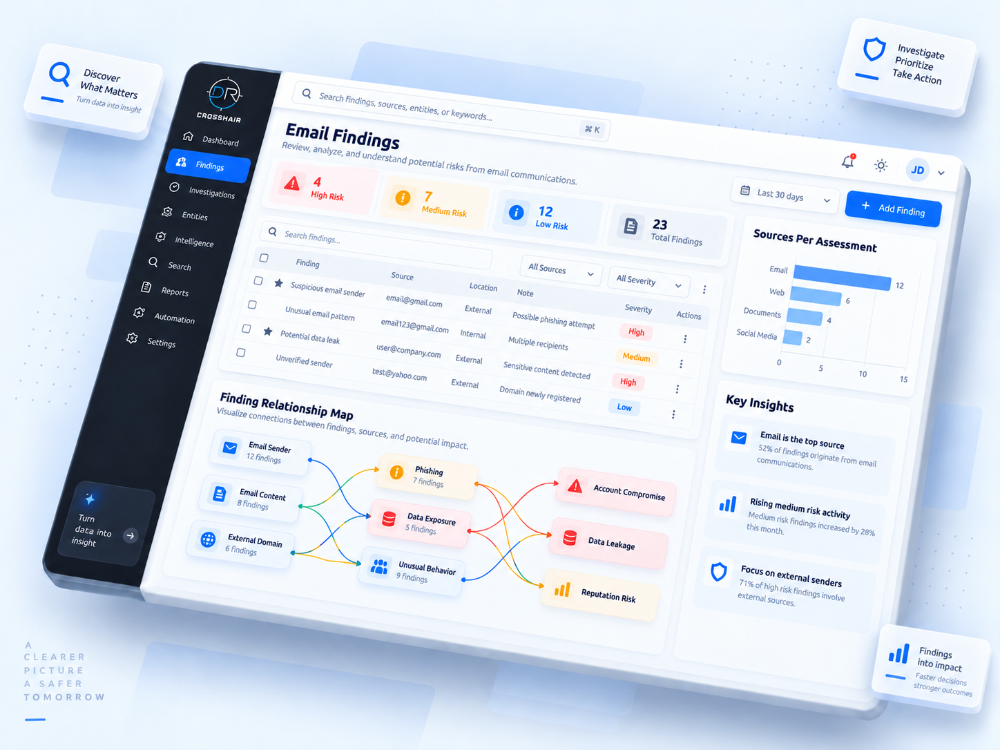
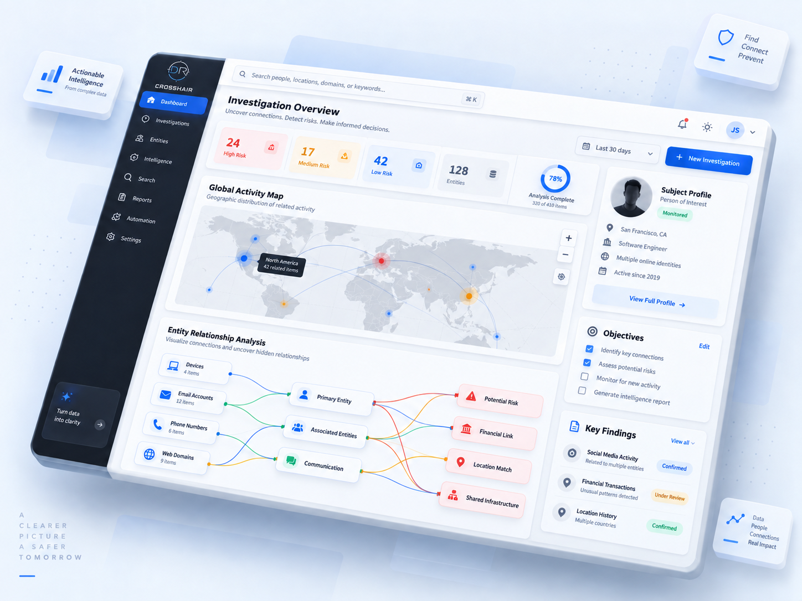
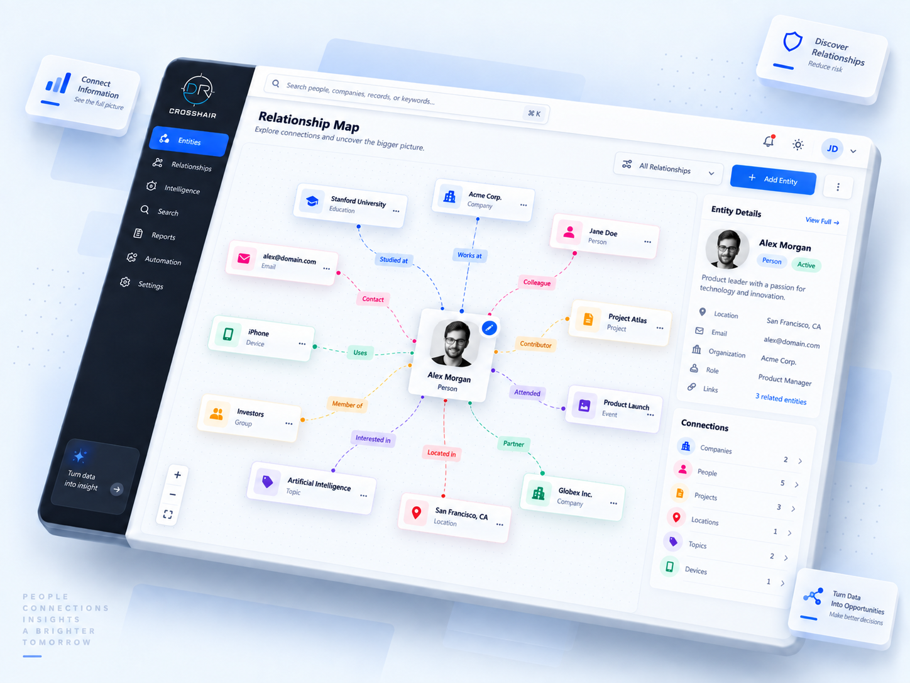
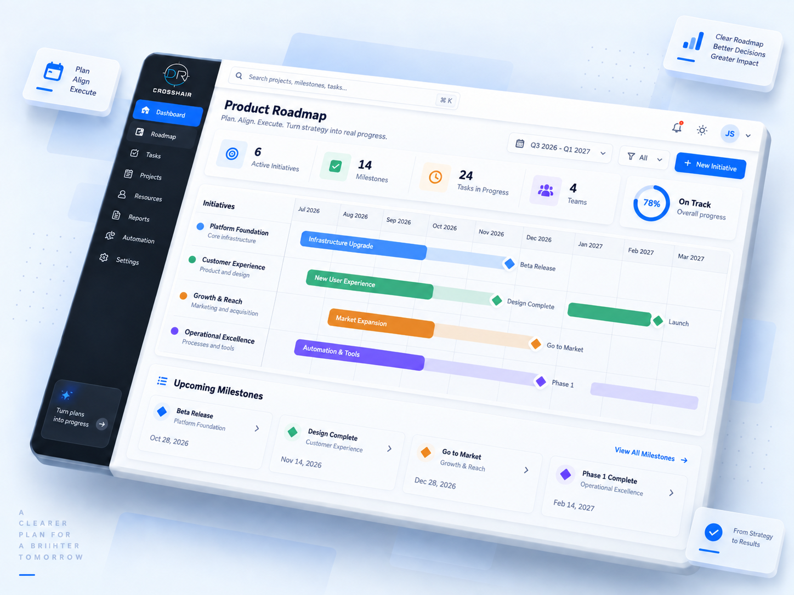

OSINT Investigation, Screening & Case Reporting
Your investigators do the work. Crosshair keeps it organized.
Crosshair eliminates the grind of intelligence reporting. Spend less time building the report and more time connecting the dots — from intake and OSINT collection through screening, risk scoring, and a polished report in PDF or Word.
Every case in Crosshair is built by hand — your investigators, your OSINT tools, your judgment. AI plays a narrow, supporting role: drafting summaries you edit, suggesting next steps you approve, surfacing patterns across large data pulls — never producing findings or writing the report for you. The work stays human; Crosshair just makes it easier to centralize, report, and track.
Crosshair is currently available by invitation only. Reach out to inquire about access.

Cut case assembly time, not corners.
Prioritize risk, not paperwork.
One platform from first contact to final report. Pick a feature to see it in action.
Everything about a target, on one screen
Every target gets a live command center: risk at a glance, investigation progress, and the story so far — built from the evidence your team collects, not from status meetings.

Evidence that holds up
Capture evidence as you investigate — organized by category, graded for confidence, and linked into a bigger picture.
See the connections
Mind maps turn scattered findings into a connected picture — linking targets, contacts, and events so patterns emerge at a glance instead of buried across dozens of report pages.

From findings to fixes
Findings are only half the job. Crosshair turns recommendations into a plan your client can actually execute — and shows progress against it.

Know who you're dealing with
Run a person through identity, sanctions, license, and criminal-record checks in one pass — and keep watching them after the hire or engagement, not just before it.
Start every case clean
Structured intake for both sides of the house: a client-friendly questionnaire for privacy engagements, and an investigator's interview form for OSINT cases.
One click from case file to deliverable
The report is the product. Crosshair assembles yours — branded, complete, and consistent — from the work you've already done.
Your cases, your boundary
Investigative material deserves more than a password. Crosshair enforces strong sign-in for everyone and keeps each organization's data sealed off — even from the platform operator.
Crosshair keeps case data in one encrypted database instead of scattered across spreadsheets, documents, and inboxes, with integrations to the external OSINT tools your team already relies on. Bring your own storage bucket, your own email server, even your own AI — including models that run entirely on your own hardware — or switch AI off altogether. And for teams that need it, the whole platform can run inside your own data center.
Every case is protected by an encrypted database and mandatory strong authentication — passkeys and hardware keys, or an authenticator app with recovery codes — with security and privacy built in from the ground up rather than bolted on. Each organization's data is sealed at the platform level: not even Crosshair's own operators can open a tenant, and a deleted organization is permanently erased after its 30-day restore window.
For clients who can't put sensitive case data on shared infrastructure, Crosshair can be self-hosted in your own data center. That keeps the entire platform — data, access, and infrastructure — inside your existing security boundary, which matters most for law enforcement agencies handling investigative and evidentiary material, and for organizations bound by regulatory or contractual compliance requirements that dictate exactly where and how sensitive data can be stored and processed.
The platform itself is held to the same standard regardless of deployment: Crosshair undergoes regular penetration testing, audits, and security reviews, combining both third-party assessments and internal reviews, so its security posture is continuously verified rather than checked once at launch.
Installable on desktop and mobile, available in English and Spanish, with dark mode built in. Crosshair is built for teams who can't afford to miss what matters. It's currently available by invitation — reach out to see if it's a fit.